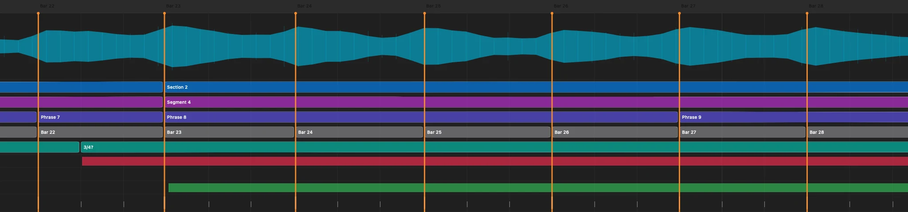
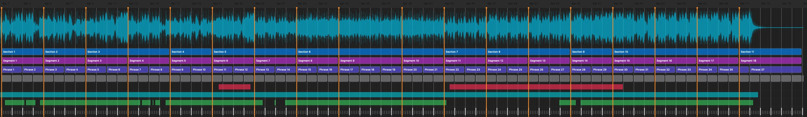
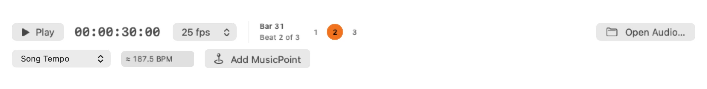

A timeline that speaks music
Sections, segments, phrases, bars and beats stay visible alongside the waveform and activity lanes.
Native music timing for macOS
TimeCoder analyses a track into musical sections, phrases, bars and beats—then turns the moments that matter into editable timecode points for ETC Eos.
TestFlight beta for Mac · Requires macOS 27 or later

On-device music analysis
Frame-accurate timecode
Direct ETC Eos export
Native Mac workflow
From audio to cues
Start with a song, refine the musical landmarks, then carry those decisions into your show file.
TimeCoder maps the waveform, song structure, rhythm and useful activity boundaries.
Add, move and label MusicPoints. Choose which sections, phrases, bars or beats become active.
Review cue assignments and send verified timecode events over the local network, or export a CSV.
Designed for the detail

Sections, segments, phrases, bars and beats stay visible alongside the waveform and activity lanes.
Drag timing points, rename structure, attach notes and choose exactly what reaches the console.
Inspect the destination, avoid conflicting events, preserve existing data and verify the finished import.
Save the work with embedded audio or a reference to the original, with autosave and recovery built in.
Made for playback
Follow the playhead, see the current bar and beat, compare tempo at different musical scopes and mark a new moment without leaving the transport.

Help shape TimeCoder
Put TimeCoder into a real programming workflow and tell us where it helps, where it slows you down and what needs refining.
Testing is provided through Apple TestFlight. Beta builds may be incomplete and expire after 90 days.